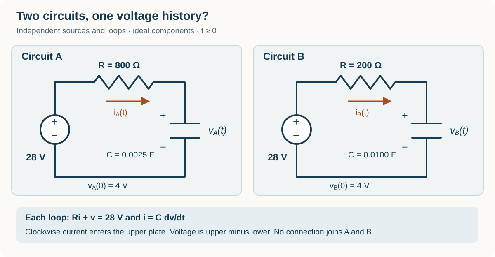

Course practice / Batch 18 / 2026-10-12 PDT
MTH 256
第二周积分因子与建模
Week 2 integrating factors & modelling · 可核验的 Week 2：一阶线性积分因子、指数与三角函数输入、定义域、稳定/不稳定/半稳定平衡、饱和增长参数拟合、逻辑斯蒂增长、变体积混合及 RC 电路
Two integrating factors give the same initial-value solution
For dimensionless t ≥ 0, solve \((t+4)y^{\prime}+y=2t+4\), y(0) = 3. Both variables are dimensionless.
- Put the equation into first-order linear standard form. Identify p(t) and q(t), find an integrating factor μ(t), and display the product-derivative equation.
- Solve the IVP. Verify the original, undivided equation and the initial condition, then find y(2) and the initial slope.
- Another student uses \(\widetilde\mu(t)=7(t+4)\). Check that this is also an integrating factor. Carry the factor 7 through the integration and initial-condition step, and show whether it changes y(t). Explain why an integrating factor need not be unique.
中文提示（不含解答）
先除以导数前的系数，再识别标准形式。积分因子乘一个非零常数时，乘积导数的两边都要同时乘这个常数。
The sign in the integrating factor matters
On the stated domain t > 0, solve \(y^{\prime}-3y/t=2t^3\), y(1) = −1. Both variables are dimensionless.
- Find the integrating factor from the coefficient of y. A proposed alternative is \(\nu(t)=t^3\). Expand \((\nu y)^{\prime}\) and explain why it does or does not match the left side after multiplication by ν.
- Use the correct integrating factor to solve the IVP, and verify the equation and initial condition.
- Find the unique positive time when y = 0 and the slope then. State the sign of y on each side of that time within t > 0. State the maximal open interval containing t = 1 allowed by the original equation.
中文提示（不含解答）
标准形式里 y 的系数是 −3/t，不是 3/t。检验积分因子时，乘积法则中 y 的系数必须与乘过因子后的原方程一致。
A positive integrating factor on a negative-logarithm interval
On 0 < t < 1, solve \(y^{\prime}+y/(t\ln t)=1/(t^2\ln t)\), with \(y(e^{-1})=e\). Both variables are dimensionless and ln is the real natural logarithm.
- Find a positive integrating factor on the stated interval. Show the product-derivative equation and solve the IVP. Explain why \(e^{\ln|\ln t|}\) is −ln t here, rather than ln t.
- Verify the differential equation and the initial value. Find \(y(e^{-2})\) and the slope there, exactly and to three decimals.
- Use the derivative sign to find the intervals of increase and decrease and the global minimum. Find the one-sided limits as t approaches 0 and 1 from within the domain, and state the maximal open interval containing the initial time allowed by the original equation.
中文提示（不含解答）
在这个区间里 ln t 为负数。先保留绝对值判断积分因子的符号，再求乘积导数；判断极值时可看导数分子的符号。
The accumulated response can be found in two ways
For t ≥ 0, solve \(y^{\prime}+y=te^{-t}\), y(0) = 2. Both variables are dimensionless. Define the accumulated response by \(A(T)=\int_0^T y(t)dt\) for T ≥ 0.
- Use an integrating factor to solve the IVP. Verify the equation and initial value, and find the initial slope.
- Find A(2) exactly and to three decimals, and find \(\lim_{T\to\infty}A(T)\). Independently check the latter by integrating the original differential equation from 0 to T and taking a limit.
- Show from the derivative sign that y decreases strictly for t ≥ 0, even while the input \(te^{-t}\) initially increases. Find the long-term response and the fraction of the total accumulated response occurring after t = 2, exactly and to three decimals.
中文提示（不含解答）
这里积分因子会消掉右端的指数。累计量是解的积分；积分原方程时，y′ 的积分可以直接用端点函数值表示。
A repeated root can attract from only one side
Consider the autonomous equation \(x^{\prime}=(x+1)(x-2)^2(6-x)\) for real, dimensionless x and t. Do not solve it explicitly. Use a vertical phase line, with an upward arrow meaning x increases as t increases. For this smooth equation, you may use the uniqueness property that distinct solution curves cannot cross an equilibrium solution.
- Find every equilibrium and give the sign of x′ on every interval between consecutive equilibria, including the two outer intervals. Draw the phase-line arrows. Explain what the squared factor does to the sign on either side of x = 2.
- Classify every equilibrium as attracting, repelling, or semistable using its two neighboring arrows. For a semistable equilibrium, specify which side is attracted and which side is repelled. Would the fact that the derivative of the right-hand side vanishes at x = 2, by itself, settle its stability?
- Consider separately x(0) = 0, x(0) = 3, and x(0) = 2. Find each initial slope, state the subsequent direction of motion or constancy, and identify the forward-time limiting value. Explain why the two increasing trajectories have different limiting equilibria and do not pass through them at a finite time.
中文提示（不含解答）
把重根两侧的平方因子看成正数，再检查另外两个因子的符号。半稳定必须说清楚是哪一侧靠近、哪一侧远离。
A sinusoidal input leaves a periodic long-term response
For t ≥ 0, solve \(y^{\prime}+3y=10\cos t\), y(0) = 1. Both variables are dimensionless and angles are in radians.
- Find an integrating factor and show the product-derivative equation. Evaluate the needed integral using the supplied antiderivative or integration by parts twice, then solve the IVP and verify the equation and initial value.
- Write the periodic part of your solution as \(B\cos(t-\phi)\), with B > 0 and 0 < φ < π/2. Find B, φ, and the first nonnegative time when that periodic part is greatest; give φ to three decimals. Does that same time give a stationary point of the complete IVP solution? Evaluate the complete solution’s derivative there, exactly and to three decimals, to decide.
- Write the solution as a periodic part p(t) plus a decaying part d(t), and state the sign of d(t) at every finite time. Compare the limits along \(t=2\pi n\) and \(t=\pi/2+2\pi n\) as the integer n tends to infinity. Does y have a single constant long-term limit? Find the initial value that would make the response equal to p(t) from the start.
中文提示（不含解答）
积分因子照常处理三角函数输入。区分“与周期曲线的差趋于零”和“函数本身趋于一个常数”；不同周期相位的取值可以帮助判断。
Two learning observations reveal an unknown speed limit
A learning model describes production speed P(t), in units/min, after t hours of training. It obeys \(P^{\prime}=k(M-P)\), P(0) = 0, with unknown constants M > 30 units/min and k > 0 h\(^{-1}\). Measurements give P(3) = 18 units/min and P(6) = 30 units/min. The prime denotes change per hour of training. Assume the same model for all requested t ≥ 0.
- Solve the IVP in terms of M and k. Set \(b=e^{-3k}\), with 0 < b < 1, and use the two measurements to determine b, M, and k exactly. Include units and give k to four decimals.
- Write the fitted P(t) and verify both measurements. Find P(9) exactly and the long-term production-speed limit. Explain why the gain from hour 6 to hour 9 is smaller than the gain from hour 3 to hour 6.
- Find the first training time when P = 45 units/min, exactly and to three decimals in hours; call it T. Assume production operates continuously throughout training at speed P(t). Find the total units produced by T, exactly and to the nearest whole unit. Explain the factor 60 in \(60\int_0^T P(t)dt\), and why multiplying 45 units/min by the entire elapsed time would overestimate the output.
中文提示（不含解答）
把两次读数分别写成 M(1−b) 和 M(1−b²)，先消去 M。P 是生产速度，而 P′ 是生产速度随培训时间的变化率，二者单位不同。
Find the whole window of high logistic growth
A culture follows \(N^{\prime}=0.16N(1-N/1100)\), N(0) = 110 organisms, for t ≥ 0. Time is in days, 0.16 has units day\(^{-1}\), and N is modeled continuously. Call a time productive when its instantaneous total growth rate is at least 33 organisms/day.
- Find and classify the nonnegative equilibria using slope signs. Solve the IVP by separation, verify the initial population, and state its long-term limit.
- Solve the inequality \(0.16N(1-N/1100)\ge33\) for nonnegative N. Then find the full closed time interval of productive times and its duration, exactly and to three decimals in days.
- Find the greatest total growth rate along the trajectory and the time when it occurs, exactly, with time also to three decimals. Find the population increase over the productive interval. Does its average growth rate equal the threshold 33? Calculate the average to three decimals with units and explain.
中文提示（不含解答）
先解关于数量 N 的二次不等式，再用严格递增的 N(t) 换算时间区间。阈值在区间两端达到，区间内部的速率可能更大。
Convert the pump rates before modeling a filling tank
A tank can hold 168 L and initially contains 84 L of liquid with 2.52 kg of dissolved salt. Brine containing 0.025 kg/L enters at 180 mL/s. Perfectly mixed liquid leaves at 120 mL/s. Stop when the tank first becomes full; do not model overflow. Assume constant rates, ideal mixing, no evaporation, and no other losses. Let t be numerical time in minutes, S(t) salt mass in kg, V(t) volume in L, and \(C(t)=S(t)/V(t)\) concentration in kg/L. For concise formulas, you may use the dimensionless volume ratio \(u(t)=1+3t/70\), with the coefficient 3/70 understood in min\(^{-1}\).
- Convert both pump rates to L/min. Find V(t), the filling time in both minutes and seconds, and the physical time interval. Set up the IVP for S(t), showing the salt inflow and outflow rates with units. Explain why the initial 84 L cannot be used as the denominator for the entire experiment.
- Find an integrating factor and solve for S(t) and C(t), using u if helpful. Verify the initial mass and concentration and the differential equation. Determine whether the concentration increases or decreases while the tank fills.
- Find the first time C = 0.0275 kg/L, exactly and to three decimals in both minutes and seconds, and check that it occurs before filling. Find the final salt mass and concentration. Integrate the salt outflow over the full filling interval, calculate the total salt admitted, and check the overall mass balance. Give masses to three decimals and concentrations to six decimals.
中文提示（不含解答）
先把 mL/s 统一换成 L/min，再使用分钟写体积。进水大于出水时体积会增长，出盐速率必须除以当时的体积。
Matching voltage curves can hide different currents
The diagram shows two separate closed series loops, with no connection between them. Each has its own ideal constant 28 V source and starts at capacitor voltage v(0) = 4 V. Circuit A has \(R_A=800\) Ω and \(C_A=0.0025\) F; circuit B has \(R_B=200\) Ω and \(C_B=0.0100\) F. In each loop v is the upper-plate potential minus the lower-plate potential, and current i is referenced clockwise into that plate, so \(Ri+v=28\). Use ideal components and t in seconds for t ≥ 0. Measurements do not load either circuit.
- Write and solve the capacitor-voltage IVP for each circuit. Find both time constants and show whether their complete voltage histories are identical. Find each current formula and initial current in mA, and state the actual current directions.
- Find when each capacitor first reaches 22 V, exactly and to three decimals in seconds. At that time find each current in mA. Integrate each signed current from t = 0 to that time to find the charge delivered into its upper plate, and check both values against \(C[v(t)-v(0)]\). Compare the two delivered charges.
- A voltage trace alone matches both circuits. A further measurement, made when v = 16 V, gives i = 15 mA in the stated direction. Identify which circuit was measured and recover its R from the loop equation. More generally, replace any R by \(\lambda R\) and C by \(C/\lambda\), where λ > 0 is dimensionless and the source and initial voltage stay fixed. State how the voltage history, current history, and charge delivered over a fixed interval change. Explain what information the shared voltage trace fails to determine.

中文提示（不含解答）
先比较 RC，而不是单独比较 R 或 C。电压曲线由时间常数控制；同一个电压差经过不同电阻时，电流不一定相同。